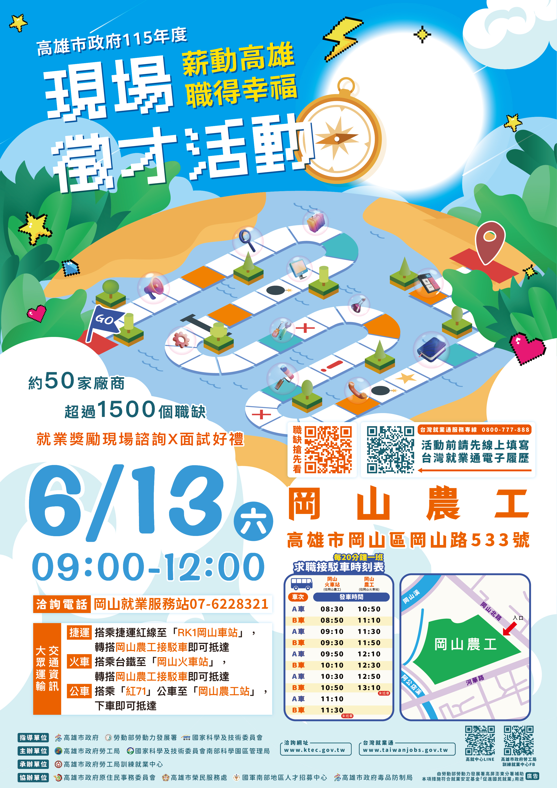
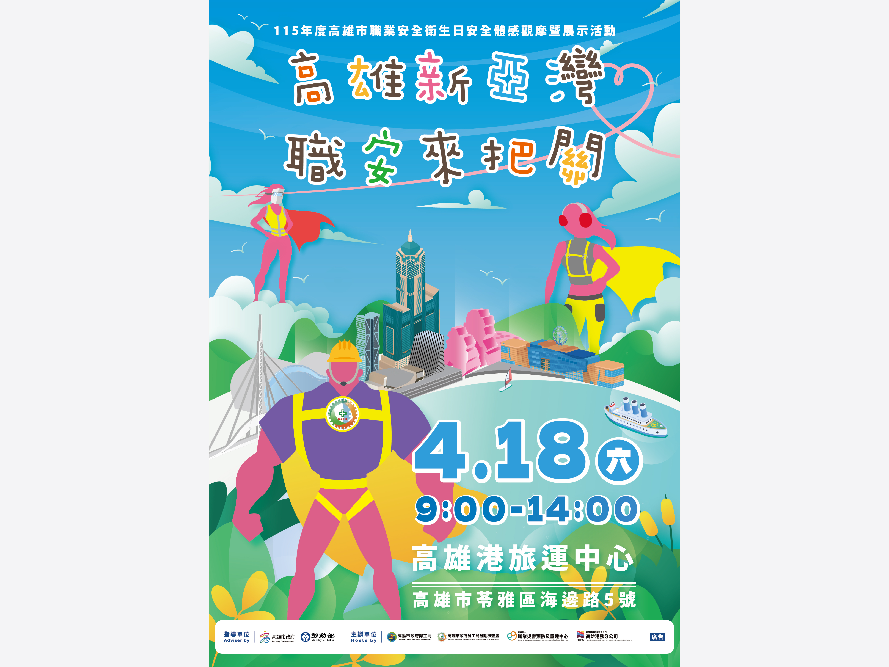
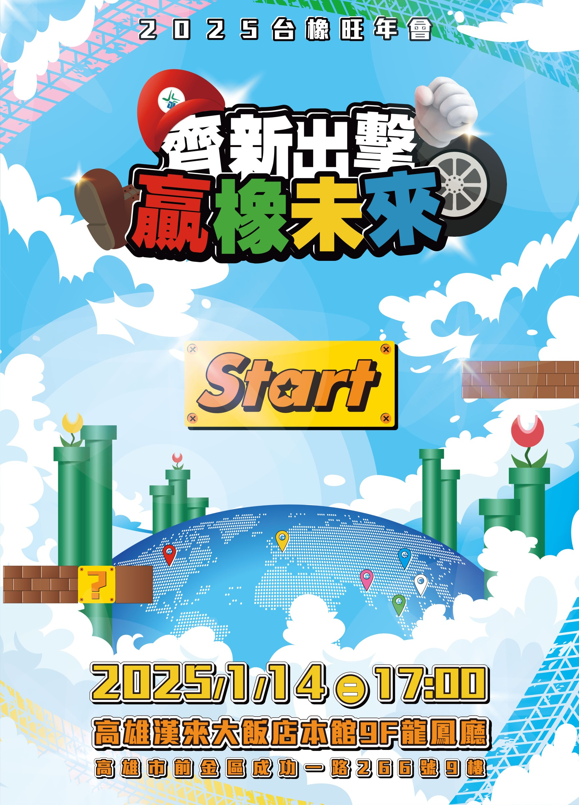
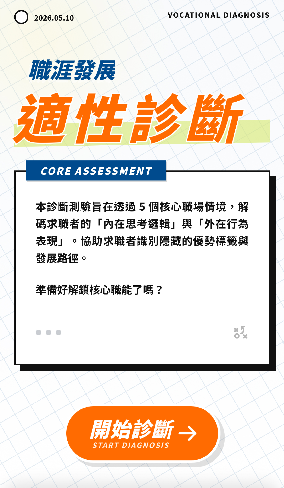
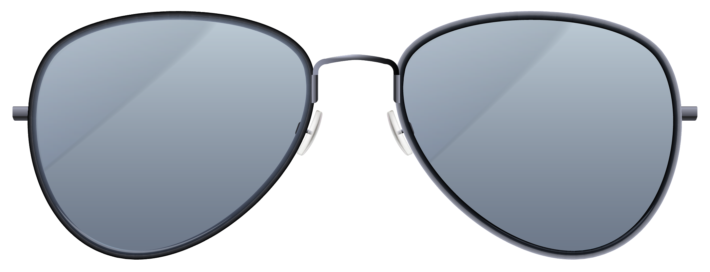
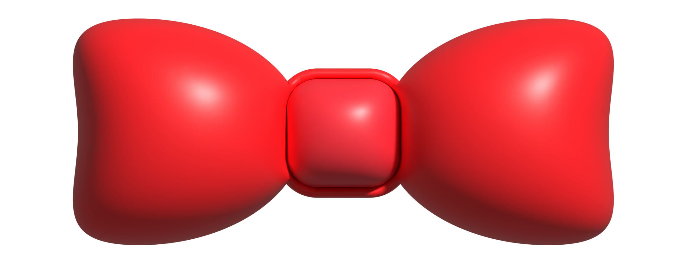
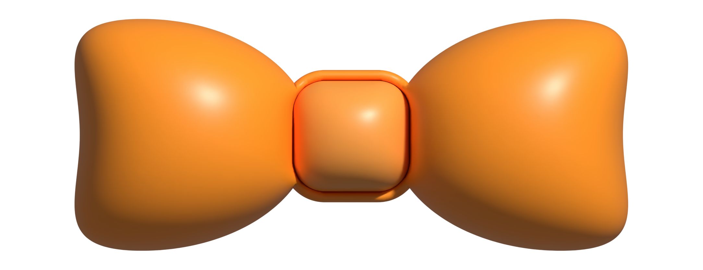

Selected Works
近期精選的設計專案與視覺實驗。

活動視覺設計
2026年高雄市政府現場徵才活動「薪動高雄 職得幸福」(岡山大型徵才)
活動視覺設計
2026年高雄市政府消防局後勁分隊與特搜第一分隊啟用典禮

活動視覺設計
2026年高雄市政府職業安全衛生日 安全體感觀摩暨展示活動
活動視覺設計
2026年嘉義縣政府 現場徵才活動Part1

活動視覺設計
2025年台橡旺年會
活動視覺設計
2025年台南好生活台南呷頭路 大型就業博覽會Part1
活動視覺設計
2025年台南好生活台南呷頭路 中型就業博覽會Part1
活動視覺設計
2024年台南好生活台南呷頭路 大型就業博覽會Part4
動態設計
2026年台橡旺年會 ELT進場前導動畫
動態設計
2026年台南好生活台南呷頭路 大型就業博覽會Part2 啟動儀式動畫
動態設計
2025年僑生就業博覽會 啟動儀式動畫
動態設計
2025年高雄市政府-智慧港都 幸福永續-論壇展示活動 啟動儀式動畫
動態設計
2026年高雄市政府職業安全衛生日安全體感觀摩暨展示活動 啟動儀式動畫
動態設計
2025年台灣就業通雲嘉南區就業博覽會 啟接儀式動畫
動態設計
2025年台灣就業通雲嘉南區就業博覽會 活動懶人包
程式設計
測測你是哪種馬路動物人格
程式設計
測測你是哪種職場神獸
程式設計
探索你的職場動物風格

程式設計
求職適性測驗
程式設計
活動電子抽獎程式
程式設計
互動展示塗鴉牆

我的眼鏡呢？

幫 MingFly 換個造型！

領子前面好像有點空！

拖曳發揮你的創意！
About Me
你好，我是 MingFly。對我而言，設計不只是美感的體現，更是為了解決問題，把想說的故事好好傳達出去。
我平時的創作範圍很廣，從平面的活動主視覺、生動的動態影像，到具備互動與可玩性的網頁，我都很有興趣。我也非常喜歡透過 AI 協作工具來輔助創作，為每一個專案找出最適合的呈現方式。
過去，我負責過不少展示活動和公部門的視覺設計與啟動儀式動畫。除了平面和動態設計，我也嘗試 UI/UX 和前端開發，獨立完成「線上人格測驗」和「活動電子抽獎系統」這類的互動專案。從一開始的腦力激盪，到最後看著作品實際上線，把想像變成現實的過程，是我做設計最大的成就感！
Core Skills
Graphic Design
平面設計
Key Visual Design
主視覺設計與延伸
Motion Graphics
動態圖像設計
UI / UX Design
介面與體驗設計
Front-End Development
前端網頁開發
Creative Coding
互動程式設計